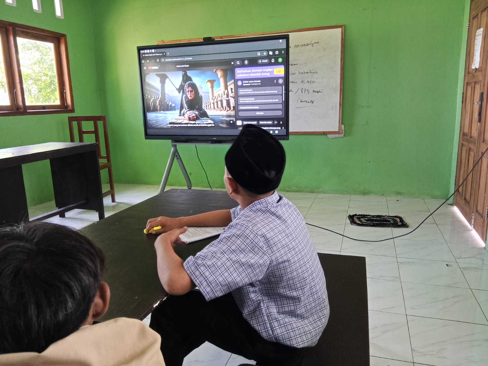

Dokumentasi asli dari kegiatan pembelajaran, praktik sains, dan prestasi siswa.

Buka judul kegiatan untuk membaca artikel dan melihat foto lengkap.
Jelajahi kehidupan belajar di SMP Sains Khairul Wadi Tebuireng Lombok.